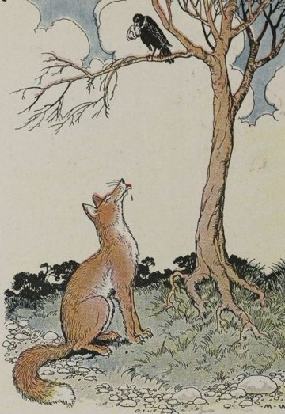

Le Corbeau et le Renard
הָעוֹרֵב וְהַשּׁוּעָל
Maître corbeau, sur un arbre perché,
Tenait en son bec un fromage.
Maître renard, par l’odeur alléché,
Lui tint à peu près ce langage :
Hé ! bonjour, monsieur du corbeau.
Que vous êtes joli ! que vous me semblez beau !
Sans mentir, si votre ramage
Se rapporte à votre plumage,
Vous êtes le phénix des hôtes de ces bois.
À ces mots le corbeau ne se sent pas de joie ;
Et, pour montrer sa belle voix,
Il ouvre un large bec, laisse tomber sa proie.
Le renard s’en saisit, et dit : Mon bon monsieur,
Apprenez que tout flatteur
Vit aux dépens de celui qui l’écoute :
Cette leçon vaut bien un fromage, sans doute.
Le corbeau, honteux et confus,
Jura, mais un peu tard, qu’on ne l’y prendrait plus.
La fable en vidéo